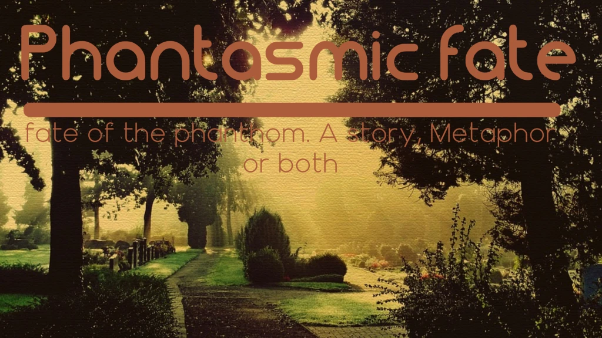

MY WORK
Here are some of my latest projects and WIPs.
Click on the images to make them bigger and look below for the Project Links.



I respect web dev
I really do respect web developers, they create the websites that make the world wide web so user friendly. Thanks to web developers we can travese websites for daily information from recipes and instruction to fix your car. Web development is not as easy as some make it out nor as hard as some say as well, like most things in life if you want to get good at it you need put in some work for it and that's what i will do and want to do for myself and the users of the internet, i may be young but that gives me more then enough time to learn all i need to help people travese the interent with no worry on there mind.
F.Freddy.I, Manupassa
Im really good at:
Writing
Design and editing
Voice Over/A
Here are some of my latest projects and WIPs.
Click on the images to make them bigger and look below for the Project Links.
I'd love your feedback!